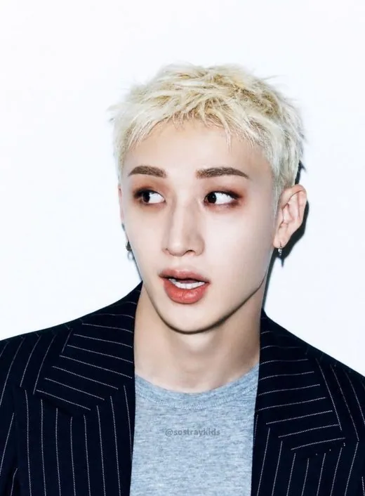
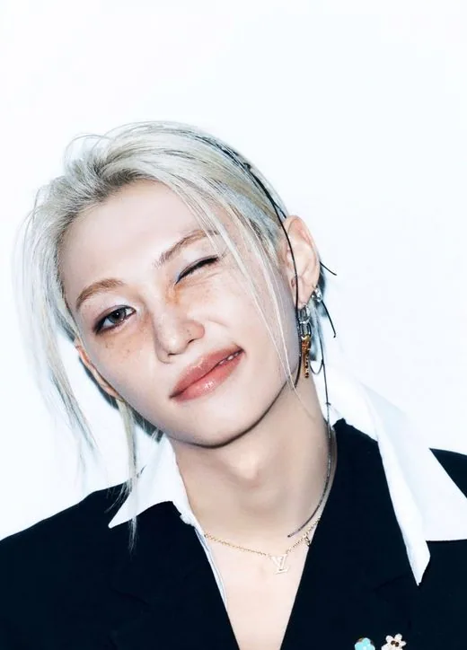

Bang Chan
Bang Chan (방찬) · Leader, Producteur, Vocaliste, Rappeur · Coréen-Australien (né à Sydney)
K-POP
Découvre Stray Kids et les profils de ses membres sur IBASE Asian Pop.
Ouvrir la fiche interactiveHistoire : Stray Kids naît d'une émission de survie du même nom diffusée sur Mnet en 2017, où Bang Chan, déjà trainee JYP depuis des années, choisit lui-même les membres de l'équipe masculine. Le groupe devait débuter à 9, mais Woojin quitte un an après le début, laissant la formation à 8 : Bang Chan, Lee Know, Changbin, Hyunjin, Han, Felix, Seungmin et I.N. Le trio Bang Chan, Changbin et Han forme l'unité de composition 3RACHA, qui écrit et produit une grande partie de leur musique. Le groupe débute le 25 mars 2018 avec « I am NOT ». C'est la particularité de Stray Kids : les membres ont eux-mêmes créé le nom du groupe et son logo. Source : KProfiles, Wikipedia.
Débuts : 25 mars 2018 (mini-album « I am NOT »)
Agence : JYP Entertainment (Republic Records aux États-Unis)

Bang Chan (방찬) · Leader, Producteur, Vocaliste, Rappeur · Coréen-Australien (né à Sydney)
Lee Know (리노) · Dance Leader, Danseur principal, Vocaliste · Coréen
Changbin (창빈) · Rappeur, Vocaliste, Producteur (3RACHA) · Coréen
Hyunjin (현진) · Danseur, Vocaliste, Rappeur · Coréen
Han (한) · Rappeur, Vocaliste, Producteur (3RACHA) · Coréen

Felix (필릭스) · Danseur principal, Rappeur principal · Coréen-Australien (né à Sydney)
Seungmin (승민) · Vocaliste principal · Coréen
I.N (아이엔) · Maknae, Vocaliste · Coréen